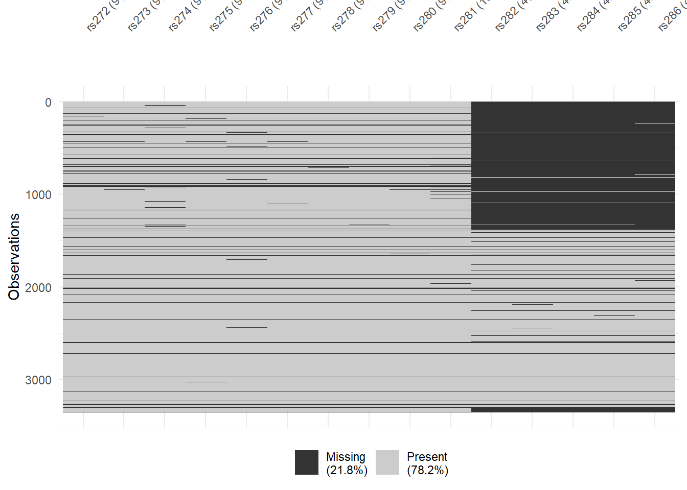

data <- data |>
mutate(educ_mv = is.na(educ)) Dealing with missing data
As one of the more serious of the ten plagues of the social sciences, we now turn to missing values. We will not discuss extensively how to deal with missing values in a statistically appropriate way. Suppose you want to fit a regression model of Y on X1 and X2. What should you do if Y, X1, or X2 are sometimes missing? Some possible approaches:
listwise deletion: discard all observations that are missing on one of the variables. This method is also known as “complete observations only”, and is the default approach used by many statistical functions in R.
pairwise deletion: correlations and covariances for two variables are computed from all observations that are not missing on those two variables. This method is available in functions such as
cor()through the argumentuse = "pairwise.complete.obs".single imputation methods make the data complete by imputing “reasonable” values for the missing values. The keyword here is of course “reasonable”. A widely used method is the imputation of missing values of
xwith the mean ofx. A somewhat better single imputation method uses predictions from a regression model, or random draws from the forecasted values of a regression model. The hot deck method imputes a missing value in observationionxby the non-missing value ofxin the observationjthat most closely resembles observationi.multiple imputation methods impute missing values by multiple values, representing the distribution of plausible values for the missing values, conditional on the observed values and a model for the joint distribution of all variables. Time permitting, multiple imputation methods (Enders, 2010; van Buuren, 2020) will be discussed later in the programme. In R, the package
miceis commonly used for multiple imputation.
R
In this part you need to learn about the following R functions and packages:
| Function | Description |
|---|---|
na_if() |
Change numeric values to missing values |
replace_na() |
Change missing values to numeric values |
is.na() |
Test whether values are missing |
vis_miss() |
Description and visualization of missing values |
Examples:
Create a dummy variable for whether educ is missing:
Create a dummy male, set to missing if sex is missing:
data <- data |>
mutate(
male = if_else(
is.na(sex),
NA_real_,
if_else(sex == 1, 1, 0)
)
) Create a dummy with case_when():
data <- data |>
mutate(
male = case_when(
sex == 1 ~ 1,
!is.na(sex) ~ 0,
TRUE ~ NA_real_
)
) Tabulate edu, including missing values:
table(data$edu, useNA = "ifany") List edu for observations for which age and country are not missing:
data |>
filter(!is.na(age), !is.na(country)) |>
select(edu) Count the number of missing values among a list of variables:
data <- data |>
mutate(
nmiss = rowSums(
is.na(select(., good01:good05))
)
) Count the number of valid, non-missing, values among a list of variables:
data <- data |>
mutate(
nvalid = rowSums(
!is.na(select(., good01:good05))
)
) Recode the values 98 and 99 of edu into missing values:
data <- data |>
mutate(
edu = na_if(edu, 98),
edu = na_if(edu, 99)
) Recode missing values to 99:
data <- data |>
mutate(
edu = replace_na(edu, 99)
) Display frequencies of missing values in a series of variables:
colSums(
is.na(
select(data, starts_with("good"))
)
) Display missing value patterns and their frequency in a series of variables:
library(visdat)
vis_miss(
select(data, good01:good05)
) Assignments
1. Use the dataset hin95_educ.
How many missing values are there in the variable educ?
Create a dummy variable indicating whether educ is missing.
Create a copy of educ with missing values set to 99.
Create a new imputed variable, replacing the missing values by the unconditional mean of educ over the observed values.
Create another new imputed variable, replacing the missing values in educ by the gender-specific conditional means of educ over the observed values. Thus, for men we impute the mean of educ for men, and for women we impute the mean of educ for women.
2. Advanced, assumes you already know regression analysis.
You may also replace the missing values in a variable y by the predicted values of y on some appropriate explanatory variables.
As an example, perform a regression of a respondent’s educ on the education of the respondent’s father, feduc, the education of the respondent’s mother, meduc, and gender, sex.
Replace missing values in educ by the predicted values of this regression.
Explain why educ still has missing values. Any suggestions how to proceed?
3. Consider the variables rs272 to rs286 in the dataset hin95.
Create a variable counting the number of non-missing values in this series of variables. How many observations have no missing values on any of these variables? How many observations have exactly one missing value? How many observations are always missing in this series?
Study the patterns in the missing values. For example, is the missing value pattern monotonic, meaning that if variable A is missing, variable B is also missing, but beware, not necessarily the reverse. You may use tools such as
vis_miss()or tables based onis.na().Now select the observations without missing values. Generate a variable with the mean of these variables. What is the mean of this mean-variable?
Also create a variable with the mean over the available values. Thus, if for an observation the variables
v1,v3, andv8are observed and the other variables are missing, for this observation you should return(v1 + v3 + v8) / 3. UserowMeans()with care.
4. In a dataset you have variables male, respondent’s gender, 0 = female and 1 = male, feduc, father’s education, and meduc, mother’s education.
You want to create a variable ssedu that represents the level of education of the same-sex parent, i.e., for men the father and for women the mother.
Give code, and carefully discuss how to deal with missing values in the three variables.
Answers
Make sure this file is in the same R Project as the data folder. Use relative file paths, not full paths to your computer.
library(tidyverse)── Attaching core tidyverse packages ──────────────────────── tidyverse 2.0.0 ──
✔ dplyr 1.2.1 ✔ readr 2.2.0
✔ forcats 1.0.1 ✔ stringr 1.6.0
✔ ggplot2 4.0.3 ✔ tibble 3.3.1
✔ lubridate 1.9.5 ✔ tidyr 1.3.2
✔ purrr 1.2.2
── Conflicts ────────────────────────────────────────── tidyverse_conflicts() ──
✖ dplyr::filter() masks stats::filter()
✖ dplyr::lag() masks stats::lag()
ℹ Use the conflicted package (<http://conflicted.r-lib.org/>) to force all conflicts to become errorslibrary(haven)
library(visdat)Warning: package 'visdat' was built under R version 4.6.1library(readstata13)Warning: package 'readstata13' was built under R version 4.6.1hin95_educ <- read_dta("data/hin95_educ.dta")
hin95 <- read.dta13("data/hin95.dta", convert.factors = FALSE)1. Describing and imputing a single variable
How many missing values are there in educ?
sum(is.na(hin95_educ$educ))[1] 24# number of missing values
mean(is.na(hin95_educ$educ))[1] 0.007155635# the same information as a proportionCreate a dummy variable indicating whether educ is missing.
hin95_educ <- hin95_educ |>
mutate(
educ_mv = is.na(educ)
)
# educ_mv is TRUE when educ is missingtable(hin95_educ$educ_mv)
FALSE TRUE
3330 24 # check the dummy against the count aboveCreate a copy of educ with missing values set to 99.
hin95_educ <- hin95_educ |>
mutate(
educ99 = replace_na(educ, 99)
)
# note that 99 is now an ordinary value: any mean or regression using educ99
# will treat it as a real education level, which it is notReplace the missing values by the unconditional mean.
hin95_educ <- hin95_educ |>
mutate(
educ_imp1 = replace_na(educ, mean(educ, na.rm = TRUE))
)
# mean imputation over the observed valuesReplace the missing values by the gender-specific conditional means.
hin95_educ <- hin95_educ |>
mutate(
educ_imp2 = replace_na(educ, mean(educ, na.rm = TRUE)),
.by = sex
)
# .by = sex makes mean() compute a separate mean within each sex
# respondents with a missing sex form their own group and therefore keep
# their missing value on educ_imp2Compare the three versions.
hin95_educ |>
summarise(
n = n(),
mean_observed = mean(educ, na.rm = TRUE),
mean_imp1 = mean(educ_imp1, na.rm = TRUE),
mean_imp2 = mean(educ_imp2, na.rm = TRUE),
sd_observed = sd(educ, na.rm = TRUE),
sd_imp1 = sd(educ_imp1, na.rm = TRUE),
sd_imp2 = sd(educ_imp2, na.rm = TRUE)
)# A tibble: 1 × 7
n mean_observed mean_imp1 mean_imp2 sd_observed sd_imp1 sd_imp2
<int> <dbl> <dbl> <dbl> <dbl> <dbl> <dbl>
1 3354 4.60 4.60 4.60 2.23 2.22 2.22# the means barely change, but the standard deviations shrink
# every imputed case sits exactly on a mean, so mean imputation invents
# certainty that the data do not contain2. Regression imputation
Fit the regression on the complete cases.
m_educ <- lm(educ ~ feduc + meduc + sex, data = hin95_educ)
summary(m_educ)
Call:
lm(formula = educ ~ feduc + meduc + sex, data = hin95_educ)
Residuals:
Min 1Q Median 3Q Max
-5.7419 -1.8328 0.0143 1.7831 5.4110
Coefficients:
Estimate Std. Error t value Pr(>|t|)
(Intercept) 3.81732 0.12485 30.575 < 2e-16 ***
feduc 0.26120 0.01951 13.388 < 2e-16 ***
meduc 0.24381 0.02587 9.423 < 2e-16 ***
sex -0.36666 0.07183 -5.105 3.51e-07 ***
---
Signif. codes: 0 '***' 0.001 '**' 0.01 '*' 0.05 '.' 0.1 ' ' 1
Residual standard error: 2.023 on 3174 degrees of freedom
(176 observations deleted due to missingness)
Multiple R-squared: 0.167, Adjusted R-squared: 0.1663
F-statistic: 212.2 on 3 and 3174 DF, p-value: < 2.2e-16# lm() applies listwise deletion by defaultReplace the missing values by the predicted values.
hin95_educ <- hin95_educ |>
mutate(
educ_hat = predict(m_educ, newdata = hin95_educ),
educ_imp3 = if_else(is.na(educ), educ_hat, educ)
)
# predict() returns NA for any respondent with a missing predictor
# only the observed values of educ are left untouchedHow many missing values remain?
hin95_educ |>
summarise(
still_missing = sum(is.na(educ_imp3)),
of_which_missing_predictor = sum(
is.na(educ) & (is.na(feduc) | is.na(meduc) | is.na(sex))
)
)# A tibble: 1 × 2
still_missing of_which_missing_predictor
<int> <int>
1 5 5# the two numbers should be equal# Why does educ still have missing values?
#
# A prediction requires all three predictors. Respondents who are missing on
# educ AND on feduc, meduc, or sex cannot be given a predicted value, so their
# missing value survives the imputation. Missingness in surveys tends to
# cluster: someone who skips questions about their own education often skips
# the parental questions as well, so this overlap is usually substantial.
#
# How to proceed?
#
# - Fit a second, simpler model using only the predictors that are observed
# for the remaining cases, and impute from that.
# - Impute the predictors first, then impute educ.
# - Note that regression imputation puts every imputed case exactly on the
# regression line, which understates the variance and inflates the
# correlations. Adding a random residual, so-called stochastic regression
# imputation, repairs part of this.
# - The proper solution is multiple imputation, for instance with the mice
# package, which imputes all variables jointly and carries the uncertainty
# about the imputed values through to the standard errors.Add a random residual to illustrate the last point.
set.seed(1)
sigma_educ <- sigma(m_educ)
hin95_educ <- hin95_educ |>
mutate(
educ_imp4 = if_else(
is.na(educ),
educ_hat + rnorm(n(), 0, sigma_educ),
educ
)
)
# stochastic regression imputation
# set.seed() makes the result reproduciblehin95_educ |>
summarise(
sd_observed = sd(educ, na.rm = TRUE),
sd_regression = sd(educ_imp3, na.rm = TRUE),
sd_stochastic = sd(educ_imp4, na.rm = TRUE)
)# A tibble: 1 × 3
sd_observed sd_regression sd_stochastic
<dbl> <dbl> <dbl>
1 2.23 2.22 2.23# the stochastic version preserves the spread of the original variable better3. A series of variables
Count the number of non-missing values per respondent.
n_items <- ncol(select(hin95, rs272:rs286))
n_items[1] 15# how many variables are in the serieshin95 <- hin95 |>
mutate(
nvalid = rowSums(!is.na(pick(rs272:rs286))),
nmiss = n_items - nvalid
)
# pick() selects the columns inside mutate()table(hin95$nvalid)
0 1 2 3 5 6 7 8 9 10 11 12 13 14 15
272 4 1 5 6 1 2 6 60 1219 22 3 10 49 1694 # distribution of the number of valid answershin95 |>
summarise(
complete = sum(nvalid == n_items),
exactly_one_missing = sum(nmiss == 1),
all_missing = sum(nvalid == 0)
) complete exactly_one_missing all_missing
1 1694 49 272# the three counts asked for in the assignmentVisualise the missing value patterns.
hin95 |>
select(rs272:rs286) |>
vis_miss()
# each row is a respondent, each column a variable
# a staircase shape suggests a monotone patternStudy the patterns as a table.
hin95 |>
select(rs272:rs286) |>
is.na() |>
colSums()rs272 rs273 rs274 rs275 rs276 rs277 rs278 rs279 rs280 rs281 rs282 rs283 rs284
288 288 308 296 298 293 293 291 293 326 1585 1602 1602
rs285 rs286
1605 1589 # how many missing values does each variable have separatelyhin95 |>
select(rs272:rs286) |>
is.na() |>
as_tibble() |>
count(across(everything()), sort = TRUE) |>
slice(1:10)# A tibble: 10 × 16
rs272 rs273 rs274 rs275 rs276 rs277 rs278 rs279 rs280 rs281 rs282 rs283 rs284
<lgl> <lgl> <lgl> <lgl> <lgl> <lgl> <lgl> <lgl> <lgl> <lgl> <lgl> <lgl> <lgl>
1 FALSE FALSE FALSE FALSE FALSE FALSE FALSE FALSE FALSE FALSE FALSE FALSE FALSE
2 FALSE FALSE FALSE FALSE FALSE FALSE FALSE FALSE FALSE FALSE TRUE TRUE TRUE
3 TRUE TRUE TRUE TRUE TRUE TRUE TRUE TRUE TRUE TRUE TRUE TRUE TRUE
4 FALSE FALSE FALSE FALSE FALSE FALSE FALSE FALSE FALSE TRUE TRUE TRUE TRUE
5 FALSE FALSE FALSE FALSE FALSE FALSE FALSE FALSE FALSE FALSE TRUE TRUE TRUE
6 FALSE FALSE FALSE FALSE FALSE FALSE FALSE FALSE FALSE TRUE FALSE FALSE FALSE
7 FALSE FALSE TRUE FALSE FALSE FALSE FALSE FALSE FALSE FALSE TRUE TRUE TRUE
8 FALSE FALSE FALSE FALSE TRUE FALSE FALSE FALSE FALSE FALSE TRUE TRUE TRUE
9 FALSE FALSE FALSE FALSE FALSE FALSE FALSE FALSE FALSE FALSE FALSE TRUE TRUE
10 FALSE FALSE FALSE FALSE TRUE FALSE FALSE FALSE FALSE FALSE FALSE FALSE FALSE
# ℹ 3 more variables: rs285 <lgl>, rs286 <lgl>, n <int># the ten most frequent missing value patterns
# TRUE means missing# Is the pattern monotone?
#
# If the variables are ordered so that the number of missing values only
# increases from left to right, and if a respondent missing on one variable
# is also missing on every later variable, the pattern is monotone. This is
# typical for a questionnaire that respondents abandon partway through: they
# answer up to a point and then stop.
#
# Compare the column sums above with the patterns table. If the frequent
# patterns are all of the form "observed ... observed, missing ... missing",
# the pattern is monotone. Isolated gaps in the middle mean it is not.Select the complete observations and compute the mean.
hin95_complete <- hin95 |>
filter(nvalid == n_items) |>
mutate(
rs_mean = rowMeans(pick(rs272:rs286))
)
# no na.rm is needed here because these rows have no missing valueshin95_complete |>
summarise(
n = n(),
mean_of_means = mean(rs_mean)
) n mean_of_means
1 1694 3.071271# the mean of the mean-variable over the complete casesCompute the mean over the available values, for all respondents.
hin95 <- hin95 |>
mutate(
rs_mean_available = if_else(
nvalid == 0,
NA_real_,
rowMeans(pick(rs272:rs286), na.rm = TRUE)
)
)
# rowMeans(na.rm = TRUE) returns NaN, not NA, for a row with no valid values
# the if_else() turns those rows into a proper missing valuehin95 |>
summarise(
n_valid_scale = sum(!is.na(rs_mean_available)),
mean_available = mean(rs_mean_available, na.rm = TRUE)
) n_valid_scale mean_available
1 3082 2.98348# compare with the complete-case mean above
# a difference between the two suggests that respondents with missing values
# differ systematically from respondents without them4. Education of the same-sex parent
# The construction itself is one line, but the missing values need thought.
# There are three sources of missingness, and they are not equivalent.
#
# 1. male is missing. We do not know which parent to look at, so ssedu must
# be missing, even if both feduc and meduc are observed.
# 2. The same-sex parent's education is missing. Then ssedu is missing:
# that is precisely the value we wanted.
# 3. The OTHER parent's education is missing. This is irrelevant. A woman
# with an observed meduc should get a value for ssedu even if feduc is
# missing. Code that is careless about this throws away usable cases.
#
# if_else() handles all three correctly: it propagates NA from the condition,
# and it evaluates only the branch that applies.data <- data |>
mutate(
ssedu = if_else(male == 1, feduc, meduc)
)
# male == 1 gives NA when male is missing, so ssedu becomes NA
# for men the father's education is taken, for women the mother's